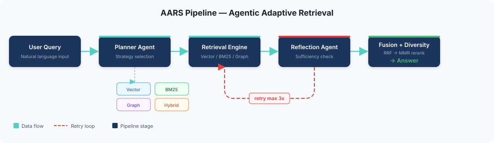
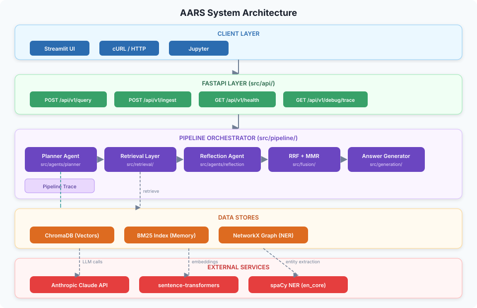
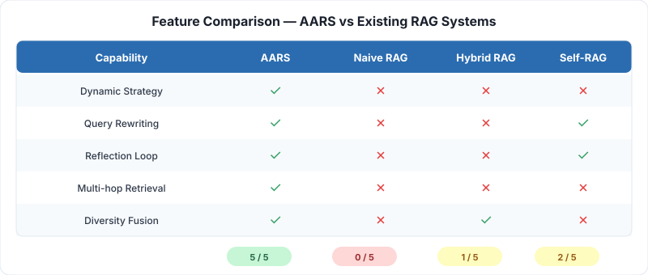
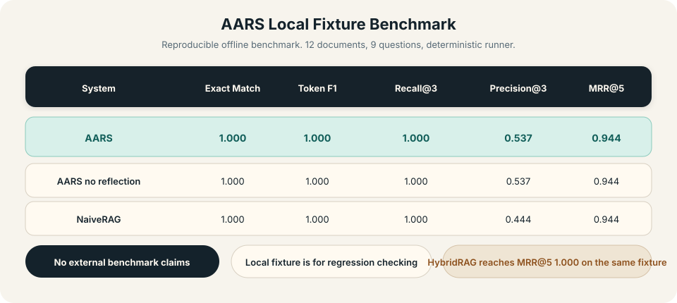

Python 3.11+
FastAPI
Multimodal
Local benchmark
MIT
Adaptive retrieval that plans before it retrieves.
AARS is a query-aware RAG backend that selects retrieval strategy per question—keyword, vector, graph, or hybrid—checks whether the evidence is sufficient via reflection, fuses results with RRF + MMR, and supports text, image, and video ingestion.
No fake hosted demo. No fake benchmark claims. The runtime path and the benchmark in this repository are both real and rerunnable.

How It Works
Planning, reflection, and fusion are part of the runtime, not marketing copy.
- Plan Classify the query by type (factual, analytical, multi-hop, opinion, conversational) and complexity (simple, moderate, complex). Choose keyword, vector, graph, hybrid, or none.
- Retrieve Run collection-aware retrieval across BM25, ChromaDB dense vectors, or entity-relationship graph traversal.
- Reflect An LLM-based reflection agent checks evidence sufficiency, outputting confidence score and gap analysis.
- Retry When evidence is insufficient, revise the query and strategy. Up to 3 reflection iterations.
- Fuse Merge ranked lists with Reciprocal Rank Fusion (RRF, k=60) and rerank with Maximal Marginal Relevance (MMR, λ=0.5).
- Generate Return grounded answer with citations, documents, confidence, reasoning, and full execution trace.


Why AARS
Fixed-pipeline RAG is the wrong abstraction for mixed question types.
Query-aware strategy selection
Factual, semantic, and multi-hop questions are routed to keyword, vector, or graph retrieval respectively. No one-size-fits-all pipeline.
Reflection-driven re-retrieval
Unlike Self-RAG (binary retrieve/don't) or FLARE (confidence-triggered), AARS's reflection agent can switch strategies and rewrite queries across iterations.
Shared runtime state
Startup initializes shared orchestrator, ingestion, keyword, and graph state so the API does not rebuild core components per request.
Graceful fallbacks
sentence-transformers unavailable? Falls back to hashing embeddings. spaCy missing? Uses title-case entity extraction. AARS still runs.
Multimodal Support
Text, images, and video through a single ingestion pipeline.
Automatic modality detection
Files are classified as text, image, or video by extension and MIME type. Per-collection modality statistics inform retrieval strategy selection.
Image processing
OCR extraction via pytesseract when available. Fallback to metadata-only documents with dimensions and format. Supports PNG, JPG, GIF, BMP, WebP, TIFF.
Video processing
Keyframe extraction via OpenCV at regular intervals. Audio transcription via ffmpeg + speech_recognition. Supports MP4, AVI, MOV, MKV, WebM.
Unified indexing
After modality-specific extraction, all content is unified into text that flows through the standard chunking, embedding, and indexing pipeline.
Retrieval Strategies
Four retrieval modes, selected per query.
Keyword (BM25)
Okapi BM25 sparse lexical scoring. Thread-safe in-memory index with per-collection isolation. Best for factual queries with strong lexical cues.
Vector (Dense)
sentence-transformers embeddings (all-MiniLM-L6-v2) stored in ChromaDB. Cosine similarity matching. Deterministic hashing fallback when ST unavailable.
Graph (Entity)
spaCy NER builds entity co-occurrence graphs (NetworkX). BFS traversal up to configurable hop limit. Ideal for multi-hop questions connecting entities across documents.
Hybrid (Fusion)
Executes all enabled strategies in parallel, merges via RRF, diversifies with MMR. Selected when the planner detects mixed or complex queries.
Benchmark
A reproducible local benchmark, not a hand-waved leaderboard claim.
The checked-in benchmark is the local offline fixture: 12 documents, 9 questions, 8 systems (including TreeDex), and no external dataset download. It exists for regression checking and for proving the retrieval runtime actually works.
Result file:
benchmarks/results_local.jsonStable metrics: EM, F1, Recall@3, Precision@3, MRR@5, NDCG@5
Latency is local-machine dependent and can move between runs
Run:
python benchmarks/runner.py --output benchmarks/results_local.json
| System | EM | F1 | Recall@3 | Precision@3 | MRR@5 | NDCG@5 |
|---|---|---|---|---|---|---|
| AARS | 1.000 | 1.000 | 1.000 | 0.537 | 0.944 | 0.959 |
| AARS no reflection | 1.000 | 1.000 | 1.000 | 0.537 | 0.944 | 0.959 |
| NaiveRAG | 1.000 | 1.000 | 1.000 | 0.444 | 0.944 | 0.959 |
| HybridRAG | 1.000 | 1.000 | 1.000 | 0.444 | 1.000 | 0.991 |
| FLARE-style | 1.000 | 1.000 | 1.000 | 0.444 | 0.944 | 0.959 |
| Self-RAG-style | 1.000 | 1.000 | 1.000 | 0.444 | 0.944 | 0.959 |
| StandardRouting | 1.000 | 1.000 | 1.000 | 0.444 | 0.944 | 0.959 |
| TreeDex-style | 1.000 | 1.000 | 1.000 | 0.463 | 0.926 | 0.936 |
API Reference
Six endpoints. One coherent surface.
| Method | Endpoint | Description |
|---|---|---|
| POST | /api/v1/query |
Run planning, retrieval, reflection, fusion, and answer generation |
| POST | /api/v1/ingest |
Upload text, PDF, image, or video into a collection |
| GET | /api/v1/health |
API and ChromaDB connectivity check |
| GET | /api/v1/collections |
List available document collections |
| DELETE | /api/v1/collections/{name} |
Delete a collection and its documents |
| GET | /api/v1/debug/trace/{id} |
Fetch a stored pipeline execution trace |
Query Request Parameters
| Field | Type | Default | Description |
|---|---|---|---|
query | string | required | User query (1-2000 chars) |
collection | string | "default" | Document collection to search |
top_k | int | 5 | Number of results (1-50) |
enable_planner | bool | true | Enable LLM-based strategy selection |
enable_reflection | bool | true | Enable sufficiency evaluation loop |
enable_fusion | bool | true | Enable RRF rank fusion |
enable_mmr | bool | true | Enable diversity reranking |
enable_keyword | bool | true | Allow BM25 retrieval |
enable_graph | bool | true | Allow graph traversal retrieval |
default_strategy | string | "vector" | Fallback when planner is disabled |
enable_trace | bool | true | Include execution trace in response |
Tech Stack
Production-grade Python, async end to end.
FastAPI
Async web framework with auto-generated OpenAPI docs, CORS support, and lifespan management.
Anthropic Claude
LLM client via official SDK for planner, reflection, and answer generation with structured output.
ChromaDB
Vector database for dense embedding storage and cosine similarity search.
sentence-transformers
all-MiniLM-L6-v2 embeddings with deterministic SHA-256 hashing fallback.
NetworkX + spaCy
Entity co-occurrence graphs with NER extraction and BFS traversal for multi-hop queries.
Pydantic + structlog
Type-safe configuration with env var overrides and structured production logging.
Streamlit UI
Interactive dashboard for querying, document upload, and trace inspection.
pytest
63 tests covering agents, chunkers, fusion, metrics, retrievers, traces, and API endpoints.
Quick Start
Install it, benchmark it, run it.
Install
git clone https://github.com/lekhanpro/aars.git cd aars pip install -e ".[dev,ui]"
Run benchmark
python benchmarks/runner.py --output benchmarks/results_local.json
Start API
cp .env.example .env # set ANTHROPIC_API_KEY in .env docker run -p 8001:8000 chromadb/chroma:latest uvicorn src.main:app --host 0.0.0.0 --port 8000 --reload
Query example
curl -X POST http://localhost:8000/api/v1/query \
-H "Content-Type: application/json" \
-d '{
"query": "What sparse ranking algorithm rewards exact term overlap?",
"collection": "demo",
"top_k": 5,
"enable_planner": true,
"enable_reflection": true,
"enable_fusion": true,
"enable_mmr": true,
"enable_keyword": true,
"enable_graph": true,
"enable_trace": true
}'
Ingest a document
curl -X POST http://localhost:8000/api/v1/ingest \ -F "file=@my_document.pdf" \ -F "collection=demo"
Run tests
pytest -q python -m compileall src benchmarks tests
Project Structure
Clean separation of concerns, 46 source files.
Layout
aars/ ├── src/ │ ├── main.py # FastAPI app with lifespan │ ├── agents/ # Planner + Reflection agents │ ├── api/ # Endpoints + schemas │ ├── fusion/ # RRF + MMR + pipeline │ ├── generation/ # Answer generator │ ├── ingestion/ # Pipeline, chunkers, loaders │ │ ├── loaders/ │ │ │ ├── pdf_loader.py │ │ │ ├── text_loader.py │ │ │ ├── image_loader.py │ │ │ └── video_loader.py │ │ └── multimodal.py # Modality detection │ ├── llm/ # Anthropic client │ ├── pipeline/ # Orchestrator + trace │ ├── retrieval/ # keyword, vector, graph, none │ └── utils/ # Embeddings singleton ├── benchmarks/ # Runner, baselines, metrics ├── config/ # Settings + prompts ├── tests/ # 63 tests ├── ui/ # Streamlit dashboard ├── docs/ # This site ├── paper/ # Springer LNCS research paper └── assets/ # SVG diagrams
Sample Questions
Examples from the checked-in fixture benchmark.
This is a static explorer built from local fixture data so the page still works on GitHub Pages without a live backend.
Relevant document ids
Research Paper
Springer LNCS format, 20 real references.
The paper covers AARS architecture, adaptive strategy selection, reflection mechanism, multimodal support, and benchmark results against 8 baseline systems including Adaptive-RAG, Self-RAG, FLARE, CRAG, GraphRAG, and TreeDex.
Key contributions
Query-aware strategy selection, reflection-driven iterative retrieval, multi-strategy RRF+MMR fusion, and multimodal content segregation.
Compile the paper
cd paper && pdflatex main.tex && pdflatex main.tex
References include:
- Lewis et al. (2020) — RAG for Knowledge-Intensive NLP
- Robertson & Zaragoza (2009) — BM25 and Beyond
- Cormack et al. (2009) — Reciprocal Rank Fusion
- Carbonell & Goldstein (1998) — MMR Diversity Reranking
- Asai et al. (2023) — Self-RAG
- Jiang et al. (2023) — FLARE Active Retrieval
- Jeong et al. (2024) — Adaptive-RAG
- Peng et al. (2024) — GraphRAG Survey
- Yan et al. (2024) — Corrective RAG
- Mei et al. (2025) — Multimodal RAG Survey
...and 10 more. Full bibliography in paper/main.tex.